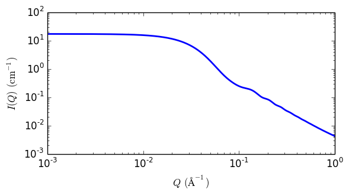

polymer_micelle
Polymer micelle model
| Parameter | Description | Units | Default value |
|---|---|---|---|
| scale | Source intensity | None | 1 |
| background | Source background | cm-1 | 0.001 |
| ndensity | Number density of micelles | 1e15/cm^3 | 8.94 |
| v_core | Core volume | Ang^3 | 62624 |
| v_corona | Corona volume | Ang^3 | 61940 |
| sld_solvent | Solvent scattering length density | 10-6Å-2 | 6.4 |
| sld_core | Core scattering length density | 10-6Å-2 | 0.34 |
| sld_corona | Corona scattering length density | 10-6Å-2 | 0.8 |
| radius_core | Radius of core ( must be >> radius_gyr ) | Å | 45 |
| radius_gyr | Radius of gyration of chains in corona | Å | 20 |
| d_penetration | Factor to mimic non-penetration of Gaussian chains | None | 1 |
| n_aggreg | Aggregation number of the micelle | None | 6 |
The returned value is scaled to units of cm-1 sr-1, absolute scale.
This model provides the form factor, \(P(q)\), for a micelle with a spherical core and Gaussian polymer chains attached to the surface, thus may be applied to block copolymer micelles. To work well the Gaussian chains must be much smaller than the core, which is often not the case. Please study the reference carefully.
Definition
The 1D scattering intensity for this model is calculated according to the equations given by Pedersen (Pedersen, 2000).
Validation
This model has not yet been validated. Feb2015

Fig. 71 1D plot corresponding to the default parameters of the model.
References
J Pedersen, J. Appl. Cryst., 33 (2000) 637-640